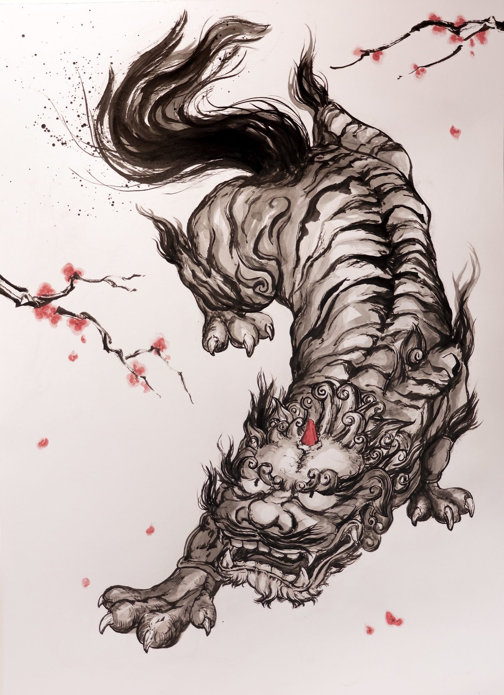

Explore my work!


“Jackpot!” — Maya Lip-Sync (In Progress)
A senior character finds exactly what he was looking for: “Oh shit — I found what I need. Not bad… JACKPOT!” Pose and timing planned from the dialogue beats first, lip-sync charted frame by frame. Finished clip lands here as my showreel piece.
About Me
I'm a visual artist and 3D animation student based in Ottawa, Canada, currently in my third year of the Animation program at Algonquin College.
With nearly five years of dedicated drawing practice, I've developed a strong interest in form, anatomy, and visual expression. My artistic foundation comes from traditional drawing, where I continue to explore life drawing, creature studies, and different artistic mediums.
My experience in 3D animation helps me with better drawing and making ideas. For example, I enjoy creating characters, exploring their movements, and expressing emotions through animation.
I'm always looking for ways to connect traditional art with digital animation. I especially enjoy character animation, visual storytelling, and creating imaginative worlds and characters.
I believe great animation begins with a strong understanding of art, observation, and movement.
- Autodesk Maya
- 3D Character Animation
- Lip-Sync & Acting
- Animatics & Timing
- Life Drawing (Charcoal)
- Oil Pastel
- Creature & Character Sketching
Contact
Open to animation opportunities, collaborations, and commissions.